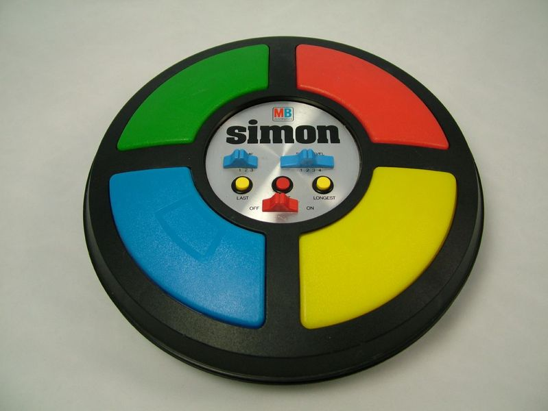

Le but du TP va être de créer un jeu Simon en Javascript. Simon est un jeu de société électronique de forme circulaire comportant quatre grosses touches de couleur différentes, rouge, vert, bleu et jaune:
Le jeu, électronique, éclaire une des quatre couleurs et produit un son toujours associé à cette couleur. Le joueur doit alors appuyer sur la touche de la couleur qui vient de s'allumer dans un délai assez court. Le jeu répète la même couleur et le même son, puis ajoute au hasard une nouvelle couleur. Le joueur doit reproduire cette nouvelle séquence. Chaque fois que le joueur reproduit correctement la séquence, le jeu ajoute une nouvelle couleurà la séquence.
Un exemple d’implémentation de ce jeu en Javascript :
http://www.kellyking.me/projects/simon/Le corps de la page HTML qui fournit le cadre pour le développement Javascript est le suivant
Ficher simon.html
<!doctype html>
<html>
<head>
<meta charset="utf-8">
<title>Simon</title>
<script type="text/javascript"src="simon.js"></script>
<link rel="stylesheet"href="simon.css"/>
</head>
<body>
<button>Début</button>Tour : <span id="tour">0</span>
<table>
<tr>
<td id="bleu">Bleu</td>
<td id="rouge">Rouge</td>
</tr>
<tr>
<td id="jaune">Jaune</td>
<td id="vert">Vert</td>
</tr>
</table>
<span id="resultat"></span>
</body>
</html>
Ficher simon.css
table,th,td {
border: 1px solid black;
}
td {
width:100px;
height:100px;
}
Recopier les codes ci-dessus et vérifier que la page s’affiche bien comme suit:
Afin de faciliter le développement on attribue un indice à chaque touche :
Cet indice nous permettra par la suite de désigner chaque toucheet d’utiliser des tableaux.
Nous allons commencer l’écriture du fichier Javascript: simon.js. La première étape est de définir un tableau en variable globale.
Le tableau touches lui est initialisé à vide (var touches= [];), il doit contenir par la suite les éléments DOM correspondant à chaque élément td de notre tableau et donc à chaque touche.
Écrire la définition ce tableau dans le fichier simon.js (le tableau est vide pour l'instant).
Il faut maintenant donner des couleurs à nos éléments.
blueredyellowgreenCompléter le fichier de style pour que les touches aient la bonne couleur.
Lorsque les touches vont clignoter on leur donnera des couleurs légèrement plus clair :
lighbluelightsalmonlightyellowlightgreen
Les éléments td prendront ses couleurs lorsqqu'on leur attribuera la classe clair.
Compléter à nouveau le fichier de style avec ces nouvelles règles.
chargement()
Le but de cette étape est d’écrire une fonction Javascript chargement() qui sera exécutée
au chargement de la page (évènement onload).
Cette fonction doit remplir le tableau touches avec les éléments DOM correspondants à chaque touche en utilisant la fonction getElementById.
L’élément 0 de ce tableau contiendra donc l’élément DOM correspondant à l’élément td ayant pour id bleu,
l’élément 1 de ce tableau contiendra donc l’élément DOM correspondant à l’élément td ayant pour id rouge, etc.
Écrire la fonction chargement() et faire qu’elle soit appelée au chargement de la page.
clignoter()
La fonction clignoter va permettre de faire clignoter une touche.
Elle prend comme argument l’indice de celle-ci et va exécuter les actions suivantes:
class à la valeur clair.
class à vide.
Pour le décalage de 400ms on utilisera la fonction setTimeout().
Écrire la fonction clignoter(). On pourra tester cette fonction en utilisant l’événement onclick sur les éléments td de notre tableau.
tourSuivant()A chaque tour n, le Simon joue une séquence et donc fait clignoter successivement n touches puis l’utilisateur doit ensuite cliquer sur cette même succession de touches. Au tour suivant, le Simon refait clignoter les n touches et en rajoute une à la fin.
La fonction tourSuivant() est appelée au début de chaque tour.
Avant d’écrire cette fonction il faut définir les variables globales suivantes:
tirages qui contiendra le tirage aléatoire des touches.
Au tour 1, ce tableau contient un élément qui correspond à la première touche choisitau hasard par le Simon
désignée par son indice 0, 1, 2 ou 3. Au tour 2, il contient le même 1ier élément puis un second qui est l’indice
d’une deuxième touche choisit au hasard, etc.
Ce tableau est initialisé à vide. La taille de ce tableau correspond au tour courant (1 pour le 1iertour, 2 pour le 2nd, etc.).
simon qui vaut true lorsque le Simon est en train de jouer une séquence et
false lorsque c’est à l’utilisateur de jouer. Par défaut cette variable est initialisée à false.
numero qui va définir le numéro dans lequel on se trouve dans la séquence,
que ce soit lorsque le Simon joue une séquence ou lorsque l’utilisateur rejoue la séquence.
Cette variable va de 0 jusqu’à la taille du tableau tirages -1.
La fonction tourSuivant() va réaliser les actions suivantes:
simon à true, c’est au Simon de jouer sa séquence.
Math.random() et parseInt().On tire une nouvelle touche au hasard.
tirages.
Par cette action on ajoute une nouvelle touche à la séquence de touches du Simon.
span ayant pour id tour avec le tour courant i.e. la taille du tableau tirages.
numero à 0.
simonJoue(). Cette fonction est définie à l’étape suivante.
Définir les variables globales ci-dessus et écrire la fonction tourSuivant().
La fonction simonJoue() va jouer la séquence définit aléatoirement.
Elle va faire clignoter la touche correspondant au numéro courant puis s’appeler pour réaliser la même action pour le numéro suivant.
Pour cela elle va effectuer les actions suivantes:
numero dans le tableau tirages.
clignoter().
numero.
numero est strictement inférieure à la taille
du tableau tirages lancer un appel à la fonction simonJoue() dans une seconde
(on utilisera la fonction setTimeout()).
simon à false
(c’est au tour de l’utilisateur de jouer) et la variable globale numero à 0.
L’utilisateur peut ensuite rejouer la séquence.
Écrire la fonction simonJoue().
debut()Cette fonction débute une partie de Simon, elle sera appelée lorsque l’utilisateur clique sur le bouton "Début". Elle effectuera les actions suivantes:
tirages comme un tableau vide(i.e. = [];).
span ayant pour id resultat, le mettre à vide.
tourSuivant().
Écrire la fonction tourSuivant() et faire qu’elle soit appelée lorsque l’on clique sur le bouton "Début".
On peut déjà vérifier que les premières fonctions sont correctes: si on appuie sur le bouton "Début" une première touche doit clignoter le nombre de tour (1) doit s’afficher.
clique()
La fonction clique() va être appeler lorsque l’utilisateur clique sur une touche pour
rejouer la séquence (soit l’évènement onclick) et prend comme argument l’indice de la touche correspondante.
Soit pour la touche 0 le code suivant :
<td onclick="clique(0);"id="bleu">Bleu</td>
La fonction clique() effectue le synoptique suivant:
simon à false i.e. c’est à l’utilisateur de jouer :
clignoter().
tirages[numero]
i.e. l’utilisateur a cliqué sur la bonne touche dans la séquence :
incrémenter la variable numero, l’utilisateur doit trouver la touche suivante.
span ayant pour id resultat à "Vous avez perdu!", l’utilisateur a perdu.
numero est égale à tirage.length, ie l’utilisateur a effectué
correctement la séquence complète.
Appeler la fonction tourSuivant() dans une seconde en utilisant la fonction setTimeout().
Écrire la fonction clique().
Vous pouvez maintenant jouer au Simon.
Si le joueur met plus de 10 secondes à appuyer sur une touche il a perdu.
Mettre en place ce mécanisme.
Ajouter une liste de choix de niveaux de difficulté: facile, moyen, difficile. Ce choix modifiera le temps maximum pour appuyer sur une touche: 5 secondes pour difficile, 10 secondes pour moyen et 20 secondes pour le mode facile.
Améliorer les graphismes du jeu :
border-radius
Dans un second temps : on pourra encore pousser le jeu en ajoutant du son et en s'approchant encore plus du design original du jeu comme dans l'exemple suivant https://codepen.io/BenLBlood/pen/LGLEoJ.